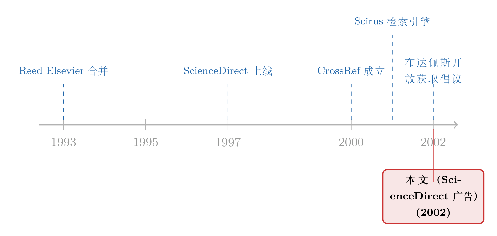

1,200 种期刊塞进一个搜索框：一页 2002 年的广告，记下了知识“上架”的那一刻
本文读的不是一篇论文，而是夹在 《Journal of Financial Economics》(2002) 正文中间的一整页广告——爱思唯尔（Elsevier）为它的数字平台 ScienceDirect 打的招牌。它用四个数字（1,200 种期刊、30 百万条摘要、10,000 种来源、3 百万篇全文）告诉你：从这一年起，学术知识不再是"一排排期刊"，而是"一个入口、一笔订阅、一个搜索框"。这页纸，正是知识被"上架"成商品的那一刻的快照。
1 引言：翻到一篇没有作者的"论文"
设想你在做文献回顾，调出一份 2002 年的 JFE 扫描件，一页页往下翻。忽然，在两篇正经的金融学论文之间，夹进来一页排版完全不同的东西——没有摘要、没有作者、没有参考文献，只有一行加粗的标语：
More Choice in… Content, Navigation, Functionality, Platforms. Essential Research Resource For the Scientists of Today.
这不是论文，这是一页广告。广告主是爱思唯尔，被推销的产品叫 ScienceDirect。落款处是一串地址：纽约、阿姆斯特丹、新加坡、东京、里约热内卢，外加五个国家的咨询电话。
按理说，一页广告没什么好"评述"的。但有意思的恰恰在这里：一份顶级学术期刊，本身就是知识生产的产物，可它的纸缝里却塞着一张把"知识"当商品来叫卖的传单。这页纸不讲任何一个金融学问题，却无意间记录了一件比任何一篇论文都更深远的事——学术知识，正是在这前后几年里，从"一件你拥有的实物"，变成了"一项你订阅的服务"。
首先要问的是：它到底在卖什么？
2 一张广告页上的四个数字
广告把卖点拆成了四块"积木"，每一块都配着一个吓人的数字。我们不妨像读一张财务报表那样，把这四个数字一个个摊开。
第一块，期刊合集（Journal Collections）：1,200 种科学、医学与技术期刊。 这是货架本身。注意，它卖的单位不是"一篇文章"，也不是"一种期刊"，而是"一千两百种期刊打包"。后面我们会看到，这个"打包"二字，是整张广告里最要命的商业设计。
第二块，文摘与索引库（A&I Databases）：横跨 30 百万条摘要、来自 10,000 多种期刊、多家出版商。 这一块卖的不是内容，是"找得到内容"。三千万条摘要意味着，你即便不读全文，也得先在这里检索一遍——它把自己做成了所有人绕不开的"前厅"。
第三块，开放链接技术（Open Linking Technologies）：CrossRef，外加链向 3 百万篇全文与摘要的内部链接。 这一块最不起眼，却是真正的技术革命。它说的是：你在 A 文里看到一条引用，点一下就能跳到 B 文。这件今天我们觉得理所当然的事，在 2002 年是全新的基础设施。（关于学术界为每篇文章发"身份证"这件事，可参见《页码消失的那一天：JFE 给每篇文章发了一个「身份证」》，那张"身份证"正是 CrossRef 链接得以运转的底层。）
第四块，过刊回溯（Journal Backfiles）与 Scirus.com： 把陈年旧刊数字化上架，再配一个"全世界最全的科学网络搜索引擎"。
接着，一个自然的问题是：这四块东西，哪一块才是这门生意真正的护城河？答案不是货架上的一千两百种期刊——内容当然重要，但内容是出版商一直就有的。真正新的东西，藏在第二块和第三块里。
3 真正卖的不是"内容"，是"入口"
把镜头拉近看第三块的那个词——CrossRef。
在纸本时代，一篇论文的引用是一段"死"文字：作者、年份、期刊、卷、期、页码。你想顺藤摸瓜去读被引的那篇，得起身走到图书馆的另一个书架，翻另一本合订本。引用与被引用之间，隔着一段物理距离和一段时间成本。
CrossRef 做的事，是把这段"死"文字接上电。它给每篇文章配一个数字对象标识符 (digital object identifier, DOI)，再让所有出版商把各自的 DOI 互相登记。于是一条引用变成了一个可以点击的链接：从这篇，一跳就到那篇。三百万篇全文，就这样被织成了一张网。
但真正关键的一步在于：当所有引用都变成链接，"入口"本身就成了价值。 你不再是去"找一篇文章"，你是进入"一个网络"。而进入这个网络的钥匙，掌握在搭网的人手里。第二块那三千万条摘要、那个非它不可的搜索前厅，是同一套逻辑——它先把自己做成你检索的起点，再让起点导流到自家货架上的全文。
于是 ScienceDirect 卖的从来不是"内容"。内容只是诱饵。它真正卖的，是入口、是导航、是"你绕不开"。 广告标语里那四个词——Content、Navigation、Functionality、Platforms——把次序排得明明白白：内容排第一，是吆喝；平台排最后，是底牌。
这与今天数据经济学里反复出现的一个主题如出一辙：掌握数据的人，赚的往往不是数据本身的钱，而是"别人离不开"的钱。关于这层逻辑，可参见《数据卖一次，就稀释一次：当垄断者的对手，是明天的自己》与《数据让定价更准，谁的钱包先变薄？》。
4 "大交易"(Big Deal) 的经济学
现在，回到第一块那个被我标记过的词——"打包"。
为什么是一千两百种期刊一起卖，而不是让图书馆按需挑选？这正是 2000 年前后席卷全球学术界的那笔生意，业内称之为"大交易"（the Big Deal）：出版商不再单卖某种期刊的订阅，而是把旗下几乎全部期刊捆成一个数字合集，按一个总价卖给大学图书馆。
从经济学上看，这是一笔教科书级别的捆绑销售（bundling）。它对卖方的好处惊人地大，我们可以一步步拆开来看。
其一，边际成本几乎为零。 一旦内容数字化，多给一个图书馆开通访问权限，多让一所大学多读一种期刊，出版商几乎不增加任何成本。在这种成本结构下，"全部打包"几乎总是优于"单独零售"——因为捆绑能把不同图书馆对不同期刊参差不齐的支付意愿"熨平"成一个更高、更整齐的总价。
其二，需求极度刚性。 一种期刊不能被另一种替代——研究者要读的就是发在《Cell》上的那一篇，不是别的。每一种期刊都是一个微型垄断，一千两百个微型垄断捆在一起，议价能力呈量级放大。
其三，也是最隐蔽的一点，取消的代价被人为抬高了。 图书馆一旦订了打包，再想砍掉其中几种用得少的，往往发现单订反而更贵、或者合同根本不允许拆。于是"打包"像一道棘轮，只能往上加，很难往下减。
把这三点放在一起，你就明白这页广告底下那五个城市的地址意味着什么了——它不是一家出版社在卖杂志，它是一个横跨四大洲的平台，在向全世界的大学征收一笔"知识通行费"。后来的故事众所周知：这笔通行费连年上涨，把许多大学图书馆的预算逼到墙角，最终在 2019 年前后引爆了加州大学系统与爱思唯尔的公开决裂。而这一切的种子，就埋在 2002 年这页志得意满的广告里。
然后，反转出现了。
就在这页广告刊出的同一年——2002 年——一群学者在布达佩斯签下了一份宣言（Budapest Open Access Initiative），第一次把"开放获取（open access）"四个字正式立成一面旗帜。它要的恰恰是这页广告的反面：知识不该被锁在付费的入口后面，而该对所有人免费敞开。
于是这页广告就有了一种近乎宿命的双重身份：它既是数字出版的胜利宣言，又是开放获取运动的出生证明。同一年，同一件事的两面，一面在 JFE 的纸缝里叫卖"绕不开的入口"，另一面在布达佩斯的会议室里宣告"要把入口拆掉"。
（顺带一提，这页广告并非孤例。同一时期 JFE 里还夹过别的同类传单，可参见《一页夹在顶刊里的广告：当尘封的「过刊」第一次被标上价格》与《把过去标价上架：一页夹在顶刊里的「数字考古」启事》——它们和本文是同一个故事的不同切片。）
5 文献脉络
把这页广告放回它的历史坐标里，这条脉络其实很清晰。
源头是 1993 年里德与爱思唯尔（Reed Elsevier）的合并，一个出版巨头由此成形。接着，1997 年 ScienceDirect 平台上线，把纸本期刊整体搬上网——这是"载体"的数字化。然后，2000 年 CrossRef 成立，把分散的文章用 DOI 织成一张可点击的引用网络——这是"连接"的数字化。2001 年 Scirus 检索引擎登场，补上"发现"的最后一块拼图。到 2002 年，也就是这页广告刊出之时，"内容—连接—发现"三件套已经凑齐，平台模式宣告成熟。
但同样在 2002 年，布达佩斯开放获取倡议（Budapest Open Access Initiative）落笔，给这条"越来越封闭、越来越值钱"的脉络，按下了第一个反向的开关。这页广告，恰好站在两股力量的交汇点上。

6 评论与延伸（Q&A + 研究方向）
(a) 几个可能的疑问
Q：把一页广告当"论文"来评述，是不是太牵强了？
它当然不是论文，本文也从不假装它是。但一份历史档案的价值，不在于它是否署名、是否有方法论，而在于它无意间记录了什么。这页广告没有一个变量、一条回归，却精确地标注了"知识商品化"的一个时间点——这正是它值得一读的地方。
Q："大交易"打包既然对图书馆这么不利，为什么图书馆当初还会签？
因为在签约的当下，它看起来是划算的：用一笔钱换来"全都能读"，单位成本似乎下降了。捆绑的代价是滞后的——它体现在续约时不断上涨的总价、和"想退退不掉"的锁定上。这是一个典型的"先甜后苦"合约，前期的可见收益掩盖了后期的议价权转移。
Q：CrossRef 既然是出版商之间的合作组织，它到底是公共品还是私人护城河？
两者都是。从技术上看，DOI 互链是不折不扣的公共基础设施，让整个学术界受益。但从商业上看，谁的内容在网络中心、谁的全文是点击的终点，谁就坐收"入口红利"。同一套技术，既织出了公共的网，也加固了私人的墙——这正是平台经济的典型张力。
Q：广告里那四个数字（1,200 / 30M / 10,000 / 3M）可信吗？
它们是营销数字，没有第三方审计，方向上必然往大了说。但本文引用它们，不是为了背书其精确性，而是看它"选择用什么来吹"——它吹的是覆盖广度（期刊数、摘要数）和连接密度（全文链接数），而不是内容质量。吹什么，本身就泄露了这门生意的真正卖点在"量"与"连"，而非"质"。
Q：开放获取运动这二十多年，到底赢了没有？
一半一半。开放获取确实成了主流议程，预印本、可免费下载的论文越来越多。但出版巨头并没有被拆掉，它们转而把收费从"订阅端"挪到了"发表端"（向作者收文章处理费），换了个口袋继续收钱。这页广告所代表的"入口经济学"，至今没有消失，只是换了形态。
(b) 几个可能的研究问题与提案
1. "大交易"打包对学术产出的因果影响。
【经济故事】当一所大学突然能读到一千两百种期刊（而非原来的几十种），它的研究者会不会引用更广、跨学科更多、产出质量更高？打包既可能"拓宽视野"，也可能"稀释注意力"。 【可行性】中。可利用各大学签订"大交易"的时间差做交错双重差分 (staggered difference-in-differences)，因变量取该校论文的引用宽度与跨领域程度。难点在签约时点数据的获取，以及处理交错 DiD 已知的估计偏误（可参见《当「更稳健」的设计悄悄把符号弄反了——重读交错双重差分》）。
2. 引用链接化（CrossRef 接入）如何改变引用行为。
【经济故事】当引用从"死文字"变成"可点击的链接"，搜索成本骤降，研究者是会更均匀地引用、还是更集中地去引那些"一跳就到"的热门文章？技术上的便利，可能反而加剧了引用的"赢者通吃"。 【可行性】中高。出版商接入 CrossRef 有明确的时间先后，可构造期刊层面的接入事件，比较接入前后该刊被引结构的集中度变化。数据来自 Web of Science / Crossref 公开 API，可得性较好。
3. 知识"入口经济学"与公司债信息平台的类比。
【经济故事】学术平台靠"绕不开的入口"收租，这套逻辑与金融市场里的信息中介（评级机构、交易前透明度平台、债券定价数据商）惊人地相似——都是先把自己做成必经之路，再向两端收费。 【可行性】中。可借鉴公司债市场关于信息中介定价权的实证框架（如评级与流动性、交易透明度实验），把"平台租金"的度量方法迁移过来。识别难点在于找到平台准入的外生变动。
4. 开放获取冲击下的出版商定价反应。
【经济故事】当免费替代品（预印本、开放获取版本）越来越多，付费平台会降价、还是把收费从订阅端转向发表端？这是一道经典的"在位者面对免费竞争"的产业组织问题。 【可行性】高。开放获取覆盖率随学科、随时间差异巨大，文章处理费与订阅价格均有公开记录，可做面板回归识别替代弹性。诚实地说，内生性（高质量期刊既贵又少开放）需要谨慎处理。
评述者的判断
这页广告当然没有"贡献"可言——它不是研究。但作为一份历史切片，它的价值出奇地高：它把"知识从实物变成服务"这一深刻转折，凝固在 2002 年的一页纸上，而且连营销话术的措辞次序（Content → … → Platforms）都诚实地暴露了这门生意的底牌。
如果说有什么"识别上的担忧"，那就是我们容易被事后视角误导——今天我们知道"大交易"和开放获取的结局，于是很容易把这页广告读成一个预言。但在 2002 年，它只是一家公司在自信地推销一个新产品，它既不知道自己正在加固一道日后引发众怒的高墙，也不知道同一年布达佩斯正在为拆这道墙磨刀。
我接下来最想看到的，是有人真正用交错 DiD 去量一量"大交易"打包对一所大学研究产出的因果效应——这是把这页广告背后的商业史，变回一个可检验的经济学问题的最佳切口。一页没有数据的广告，恰恰提出了一个非常值得用数据去回答的问题。
参考文献
- Advert: ScienceDirect — "More Choice in… Essential Research Resource for the Scientists of Today." (2002). Journal of Financial Economics. （本文评述对象：刊载于该期正文中的整页广告，无署名作者；广告主为 Elsevier，推介其 ScienceDirect 平台、CrossRef 链接服务与 Scirus.com 检索引擎。）
因评述对象是一页广告而非学术论文，其"正文"与"参考文献"均为广告内容本身，故此处无可供罗列的学术引文。文中提及的 ScienceDirect、CrossRef、Scirus、Reed Elsevier 与布达佩斯开放获取倡议，均为广告所涉实体或同年的公开历史事件，并非学术文献引用。